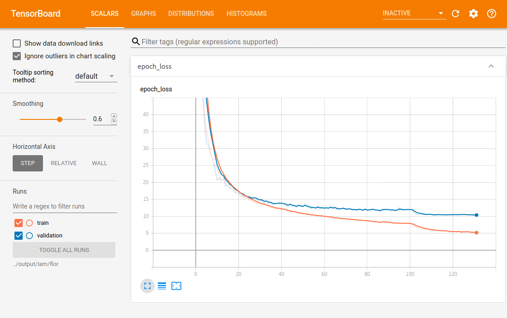
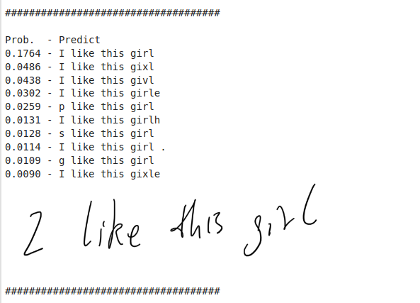

目标 实现对单行英文手写体的识别
1 0123456789abcdefghijklmnopqrstuvwxyzABCDEFGHIJKLMNOPQRSTUVWXYZ!"#$%&'()*+,-./:;<=>?@[\]^_`{|}~
引用 源项目：点击这里 点击这里 点击这里 Gated convolutional recurrent neural net- works for multilingual handwriting recognition
原文提供了多个模型，本文以上面列举的论文中描述的Flor模型为例
数据集 The Institut für Informatik und Angewandte Mathematik (IAM) database点此下载 下载前需要注册，只需要下载lines和ascii两个文件压缩包，其他内容暂时无需下载；点此下载 。
开发环境
位置
功能
本地
压缩数据
Google Driver + Google Colaboratory
开发
数据预处理 下载源项目到本地（本地不需要gpu环境），新建raw文件夹存放我们下载好的数据集
本地安装环境
1 pip install -r requirements.txt
运行transform程序用于将元数据集压缩成小体积的HDF5文件
1 python main.py --source=<DATASET_NAME> --transform
运行后获得生成的iam.hdf5文件在如下位置iam.hdf5
压缩后的hdf5文件只有86M，将data和src两个文件夹上传到Google Cloud，用Colaboratory打开tutorial.ipynb
Google Driver环境 Colaboratory已经升级到tensorflow2.x了，所有无需再安装其他环境，只需要保证Colaboratory选择了tf 2.x的版本，执行
进入Google Drive对应文件夹
1 2 3 4 5 from google.colab import drive drive.mount("./gdrive", force_remount=True) %cd "./gdrive/My Drive/Colab Notebooks/handwritten-text-recognition/src/"
训练 设置环境参数
1 2 3 4 5 6 7 8 9 10 11 12 13 14 15 16 17 18 19 20 21 22 23 24 25 import osimport datetimeimport stringsource = "bentham" arch = "flor" epochs = 1000 batch_size = 16 source_path = os.path.join(".." , "data" , f"{source} .hdf5" ) output_path = os.path.join(".." , "output" , source, arch) target_path = os.path.join(output_path, "checkpoint_weights.hdf5" ) os.makedirs(output_path, exist_ok=True ) input_size = (1024 , 128 , 1 ) max_text_length = 128 charset_base = string.printable[:95 ] print("source:" , source_path) print("output" , output_path) print("target" , target_path) print("charset:" , charset_base)
生成训练数据集
1 2 3 4 5 6 7 8 9 10 from data.generator import DataGeneratordtgen = DataGenerator(source=source_path, batch_size=batch_size, charset=charset_base, max_text_length=max_text_length) print(f"Train images: {dtgen.size['train' ]} " ) print(f"Validation images: {dtgen.size['valid' ]} " ) print(f"Test images: {dtgen.size['test' ]} " )
Train images: 5369
载入模型
1 2 3 4 5 6 7 8 9 10 11 12 13 14 from network.model import HTRModelmodel = HTRModel(architecture=arch, input_size=input_size, vocab_size=dtgen.tokenizer.vocab_size) model.compile(learning_rate=0.001 ) model.summary(output_path, "summary.txt" ) model.load_checkpoint(target=target_path) callbacks = model.get_callbacks(logdir=output_path, checkpoint=target_path, verbose=1 )
模型summary：
训练模型
1 2 3 4 5 6 7 8 9 10 11 12 13 14 15 16 17 18 19 20 21 22 23 24 25 26 27 28 29 30 31 32 33 34 35 36 37 38 39 start_time = datetime.datetime.now() h = model.fit(x=dtgen.next_train_batch(), epochs=epochs, steps_per_epoch=dtgen.steps['train' ], validation_data=dtgen.next_valid_batch(), validation_steps=dtgen.steps['valid' ], callbacks=callbacks, shuffle=True , verbose=1 ) total_time = datetime.datetime.now() - start_time loss = h.history['loss' ] val_loss = h.history['val_loss' ] min_val_loss = min(val_loss) min_val_loss_i = val_loss.index(min_val_loss) time_epoch = (total_time / len(loss)) total_item = (dtgen.size['train' ] + dtgen.size['valid' ]) t_corpus = "\n" .join([ f"Total train images: {dtgen.size['train' ]} " , f"Total validation images: {dtgen.size['valid' ]} " , f"Batch: {dtgen.batch_size} \n" , f"Total time: {total_time} " , f"Time per epoch: {time_epoch} " , f"Time per item: {time_epoch / total_item} \n" , f"Total epochs: {len(loss)} " , f"Best epoch {min_val_loss_i + 1 } \n" , f"Training loss: {loss[min_val_loss_i]:.8 f} " , f"Validation loss: {min_val_loss:.8 f} " ]) with open(os.path.join(output_path, "train.txt" ), "w" ) as lg: lg.write(t_corpus) print(t_corpus)
训练输出如下：
1 2 3 4 5 6 7 8 9 10 11 12 13 14 15 16 17 18 19 20 21 22 23 24 25 26 27 28 29 30 31 32 33 34 35 36 37 38 39 40 41 42 43 44 45 46 47 48 49 50 51 52 53 54 55 56 57 58 59 60 61 62 63 64 65 66 67 68 69 70 71 72 73 74 75 76 77 78 79 80 81 82 83 84 85 86 87 88 89 90 91 92 93 94 95 96 97 98 99 100 101 102 103 104 105 106 107 108 109 110 111 112 113 114 115 116 117 118 119 120 121 122 123 124 125 126 127 128 129 130 131 132 133 134 135 136 137 138 139 140 141 142 143 144 145 146 147 148 149 150 151 152 153 154 155 156 157 158 159 160 161 162 163 164 165 166 167 168 169 170 171 172 173 174 175 176 177 178 179 180 181 182 183 184 185 186 187 188 189 190 191 192 193 194 195 196 197 198 199 200 201 202 203 204 205 206 207 208 209 210 211 212 213 214 215 216 217 218 219 220 221 222 223 224 225 226 227 228 229 230 231 232 233 234 235 236 237 238 239 240 241 242 243 244 245 246 247 248 249 250 251 252 253 254 255 256 257 258 259 260 261 262 263 264 265 266 267 268 269 270 271 272 273 274 275 276 277 278 279 280 281 282 283 284 285 286 287 288 289 290 291 292 293 294 295 296 297 298 299 300 301 302 303 304 305 306 307 308 309 310 311 312 313 314 315 316 317 318 319 320 321 322 323 324 325 326 327 328 329 330 331 332 333 334 335 336 337 338 339 340 341 342 343 344 345 346 347 348 349 350 351 352 353 354 355 356 357 358 359 360 361 362 363 364 365 366 367 368 369 370 371 372 373 374 375 376 377 378 379 380 381 382 383 384 385 386 387 388 389 390 391 392 393 394 395 396 397 398 399 400 401 402 403 404 405 406 407 408 409 410 411 412 413 414 415 416 417 418 419 420 421 422 423 424 425 426 427 428 429 430 431 432 433 434 435 436 437 438 439 440 441 442 443 444 445 446 447 448 449 450 451 452 453 454 455 456 457 458 459 460 461 462 463 464 465 466 467 468 469 470 471 472 473 474 475 476 477 478 479 480 481 482 483 484 485 486 487 488 489 490 491 492 493 494 495 496 497 498 499 500 501 502 503 504 505 506 507 508 509 510 511 512 513 514 515 516 517 518 519 520 521 522 523 524 525 526 527 528 529 530 531 532 533 534 535 536 537 538 Train for 336 steps, validate for 47 steps Epoch 1/10000 335/336 [============================>.] - ETA: 0s - loss: 132.9115 Epoch 00001: val_loss improved from inf to 112.57733, saving model to ../output/iam/flor/checkpoint_weights.hdf5 336/336 [==============================] - 85s 254ms/step - loss: 132.7647 - val_loss: 112.5773 Epoch 2/10000 335/336 [============================>.] - ETA: 0s - loss: 91.6077 Epoch 00002: val_loss improved from 112.57733 to 84.62642, saving model to ../output/iam/flor/checkpoint_weights.hdf5 336/336 [==============================] - 67s 199ms/step - loss: 91.4947 - val_loss: 84.6264 Epoch 3/10000 335/336 [============================>.] - ETA: 0s - loss: 67.9746 Epoch 00003: val_loss improved from 84.62642 to 64.14977, saving model to ../output/iam/flor/checkpoint_weights.hdf5 336/336 [==============================] - 68s 202ms/step - loss: 67.8815 - val_loss: 64.1498 Epoch 4/10000 335/336 [============================>.] - ETA: 0s - loss: 50.8975 Epoch 00004: val_loss improved from 64.14977 to 49.53581, saving model to ../output/iam/flor/checkpoint_weights.hdf5 336/336 [==============================] - 67s 199ms/step - loss: 50.8209 - val_loss: 49.5358 Epoch 5/10000 335/336 [============================>.] - ETA: 0s - loss: 41.4238 Epoch 00005: val_loss improved from 49.53581 to 37.72123, saving model to ../output/iam/flor/checkpoint_weights.hdf5 336/336 [==============================] - 67s 199ms/step - loss: 41.3679 - val_loss: 37.7212 Epoch 6/10000 335/336 [============================>.] - ETA: 0s - loss: 35.4519 Epoch 00006: val_loss improved from 37.72123 to 31.85737, saving model to ../output/iam/flor/checkpoint_weights.hdf5 336/336 [==============================] - 67s 198ms/step - loss: 35.3875 - val_loss: 31.8574 Epoch 7/10000 335/336 [============================>.] - ETA: 0s - loss: 31.9418 Epoch 00007: val_loss improved from 31.85737 to 30.91054, saving model to ../output/iam/flor/checkpoint_weights.hdf5 336/336 [==============================] - 67s 198ms/step - loss: 31.8896 - val_loss: 30.9105 Epoch 8/10000 335/336 [============================>.] - ETA: 0s - loss: 28.6239 Epoch 00008: val_loss improved from 30.91054 to 28.27177, saving model to ../output/iam/flor/checkpoint_weights.hdf5 336/336 [==============================] - 67s 198ms/step - loss: 28.5771 - val_loss: 28.2718 Epoch 9/10000 335/336 [============================>.] - ETA: 0s - loss: 26.5546 Epoch 00009: val_loss improved from 28.27177 to 26.76016, saving model to ../output/iam/flor/checkpoint_weights.hdf5 336/336 [==============================] - 67s 198ms/step - loss: 26.5125 - val_loss: 26.7602 Epoch 10/10000 335/336 [============================>.] - ETA: 0s - loss: 25.0590 Epoch 00010: val_loss improved from 26.76016 to 23.57751, saving model to ../output/iam/flor/checkpoint_weights.hdf5 336/336 [==============================] - 67s 200ms/step - loss: 25.0187 - val_loss: 23.5775 Epoch 11/10000 335/336 [============================>.] - ETA: 0s - loss: 23.7331 Epoch 00011: val_loss improved from 23.57751 to 20.69439, saving model to ../output/iam/flor/checkpoint_weights.hdf5 336/336 [==============================] - 67s 199ms/step - loss: 23.6900 - val_loss: 20.6944 Epoch 12/10000 335/336 [============================>.] - ETA: 0s - loss: 22.1708 Epoch 00012: val_loss did not improve from 20.69439 336/336 [==============================] - 66s 196ms/step - loss: 22.1613 - val_loss: 21.2959 Epoch 13/10000 335/336 [============================>.] - ETA: 0s - loss: 21.1232 Epoch 00013: val_loss improved from 20.69439 to 20.41259, saving model to ../output/iam/flor/checkpoint_weights.hdf5 336/336 [==============================] - 67s 198ms/step - loss: 21.0856 - val_loss: 20.4126 Epoch 14/10000 335/336 [============================>.] - ETA: 0s - loss: 20.9379 Epoch 00014: val_loss did not improve from 20.41259 336/336 [==============================] - 66s 197ms/step - loss: 20.9045 - val_loss: 21.2980 Epoch 15/10000 335/336 [============================>.] - ETA: 0s - loss: 19.7298 Epoch 00015: val_loss improved from 20.41259 to 18.86010, saving model to ../output/iam/flor/checkpoint_weights.hdf5 336/336 [==============================] - 67s 199ms/step - loss: 19.6981 - val_loss: 18.8601 Epoch 16/10000 335/336 [============================>.] - ETA: 0s - loss: 19.3400 Epoch 00016: val_loss did not improve from 18.86010 336/336 [==============================] - 66s 197ms/step - loss: 19.3203 - val_loss: 19.4719 Epoch 17/10000 335/336 [============================>.] - ETA: 0s - loss: 18.5544 Epoch 00017: val_loss improved from 18.86010 to 18.17884, saving model to ../output/iam/flor/checkpoint_weights.hdf5 336/336 [==============================] - 67s 198ms/step - loss: 18.5163 - val_loss: 18.1788 Epoch 18/10000 335/336 [============================>.] - ETA: 0s - loss: 18.1330 Epoch 00018: val_loss did not improve from 18.17884 336/336 [==============================] - 66s 196ms/step - loss: 18.1022 - val_loss: 18.3187 Epoch 19/10000 335/336 [============================>.] - ETA: 0s - loss: 17.5673 Epoch 00019: val_loss improved from 18.17884 to 17.15069, saving model to ../output/iam/flor/checkpoint_weights.hdf5 336/336 [==============================] - 67s 199ms/step - loss: 17.5505 - val_loss: 17.1507 Epoch 20/10000 335/336 [============================>.] - ETA: 0s - loss: 17.0372 Epoch 00020: val_loss improved from 17.15069 to 16.93701, saving model to ../output/iam/flor/checkpoint_weights.hdf5 336/336 [==============================] - 66s 197ms/step - loss: 17.0032 - val_loss: 16.9370 Epoch 21/10000 335/336 [============================>.] - ETA: 0s - loss: 16.7434 Epoch 00021: val_loss did not improve from 16.93701 336/336 [==============================] - 66s 195ms/step - loss: 16.7094 - val_loss: 16.9691 Epoch 22/10000 335/336 [============================>.] - ETA: 0s - loss: 15.9796 Epoch 00022: val_loss improved from 16.93701 to 15.94700, saving model to ../output/iam/flor/checkpoint_weights.hdf5 336/336 [==============================] - 66s 197ms/step - loss: 15.9455 - val_loss: 15.9470 Epoch 23/10000 335/336 [============================>.] - ETA: 0s - loss: 15.9149 Epoch 00023: val_loss did not improve from 15.94700 336/336 [==============================] - 66s 196ms/step - loss: 15.8857 - val_loss: 16.4035 Epoch 24/10000 335/336 [============================>.] - ETA: 0s - loss: 15.3592 Epoch 00024: val_loss improved from 15.94700 to 15.33630, saving model to ../output/iam/flor/checkpoint_weights.hdf5 336/336 [==============================] - 66s 196ms/step - loss: 15.3301 - val_loss: 15.3363 Epoch 25/10000 335/336 [============================>.] - ETA: 0s - loss: 15.5498 Epoch 00025: val_loss did not improve from 15.33630 336/336 [==============================] - 66s 195ms/step - loss: 15.5190 - val_loss: 15.3991 Epoch 26/10000 335/336 [============================>.] - ETA: 0s - loss: 14.8208 Epoch 00026: val_loss did not improve from 15.33630 336/336 [==============================] - 66s 195ms/step - loss: 14.7923 - val_loss: 15.5571 Epoch 27/10000 335/336 [============================>.] - ETA: 0s - loss: 14.7251 Epoch 00027: val_loss improved from 15.33630 to 14.99310, saving model to ../output/iam/flor/checkpoint_weights.hdf5 336/336 [==============================] - 66s 195ms/step - loss: 14.7018 - val_loss: 14.9931 Epoch 28/10000 335/336 [============================>.] - ETA: 0s - loss: 14.2664 Epoch 00028: val_loss did not improve from 14.99310 336/336 [==============================] - 65s 194ms/step - loss: 14.2445 - val_loss: 15.4536 Epoch 29/10000 335/336 [============================>.] - ETA: 0s - loss: 14.0369 Epoch 00029: val_loss did not improve from 14.99310 336/336 [==============================] - 65s 193ms/step - loss: 14.0166 - val_loss: 15.3582 Epoch 30/10000 335/336 [============================>.] - ETA: 0s - loss: 13.7010 Epoch 00030: val_loss improved from 14.99310 to 14.60143, saving model to ../output/iam/flor/checkpoint_weights.hdf5 336/336 [==============================] - 65s 194ms/step - loss: 13.6926 - val_loss: 14.6014 Epoch 31/10000 335/336 [============================>.] - ETA: 0s - loss: 13.6517 Epoch 00031: val_loss did not improve from 14.60143 336/336 [==============================] - 65s 193ms/step - loss: 13.6214 - val_loss: 14.6332 Epoch 32/10000 335/336 [============================>.] - ETA: 0s - loss: 13.4087 Epoch 00032: val_loss did not improve from 14.60143 336/336 [==============================] - 65s 193ms/step - loss: 13.3921 - val_loss: 14.6731 Epoch 33/10000 335/336 [============================>.] - ETA: 0s - loss: 13.4002 Epoch 00033: val_loss improved from 14.60143 to 13.92418, saving model to ../output/iam/flor/checkpoint_weights.hdf5 336/336 [==============================] - 65s 193ms/step - loss: 13.3727 - val_loss: 13.9242 Epoch 34/10000 335/336 [============================>.] - ETA: 0s - loss: 13.1015 Epoch 00034: val_loss did not improve from 13.92418 336/336 [==============================] - 64s 192ms/step - loss: 13.0772 - val_loss: 14.5943 Epoch 35/10000 335/336 [============================>.] - ETA: 0s - loss: 12.9092 Epoch 00035: val_loss improved from 13.92418 to 13.67044, saving model to ../output/iam/flor/checkpoint_weights.hdf5 336/336 [==============================] - 65s 192ms/step - loss: 12.8889 - val_loss: 13.6704 Epoch 36/10000 335/336 [============================>.] - ETA: 0s - loss: 12.4817 Epoch 00036: val_loss did not improve from 13.67044 336/336 [==============================] - 65s 193ms/step - loss: 12.4561 - val_loss: 14.0545 Epoch 37/10000 335/336 [============================>.] - ETA: 0s - loss: 12.6042 Epoch 00037: val_loss improved from 13.67044 to 13.35262, saving model to ../output/iam/flor/checkpoint_weights.hdf5 336/336 [==============================] - 65s 193ms/step - loss: 12.5849 - val_loss: 13.3526 Epoch 38/10000 335/336 [============================>.] - ETA: 0s - loss: 12.2388 Epoch 00038: val_loss did not improve from 13.35262 336/336 [==============================] - 64s 192ms/step - loss: 12.2176 - val_loss: 13.7242 Epoch 39/10000 335/336 [============================>.] - ETA: 0s - loss: 12.2004 Epoch 00039: val_loss did not improve from 13.35262 336/336 [==============================] - 65s 192ms/step - loss: 12.1771 - val_loss: 13.8071 Epoch 40/10000 335/336 [============================>.] - ETA: 0s - loss: 12.3408 Epoch 00040: val_loss did not improve from 13.35262 336/336 [==============================] - 65s 192ms/step - loss: 12.3212 - val_loss: 14.0195 Epoch 41/10000 335/336 [============================>.] - ETA: 0s - loss: 11.9353 Epoch 00041: val_loss did not improve from 13.35262 336/336 [==============================] - 65s 193ms/step - loss: 11.9104 - val_loss: 13.8117 Epoch 42/10000 335/336 [============================>.] - ETA: 0s - loss: 11.9999 Epoch 00042: val_loss did not improve from 13.35262 336/336 [==============================] - 65s 192ms/step - loss: 12.0059 - val_loss: 13.6489 Epoch 43/10000 335/336 [============================>.] - ETA: 0s - loss: 11.8762 Epoch 00043: val_loss improved from 13.35262 to 13.32102, saving model to ../output/iam/flor/checkpoint_weights.hdf5 336/336 [==============================] - 65s 193ms/step - loss: 11.8644 - val_loss: 13.3210 Epoch 44/10000 335/336 [============================>.] - ETA: 0s - loss: 11.4415 Epoch 00044: val_loss improved from 13.32102 to 12.82879, saving model to ../output/iam/flor/checkpoint_weights.hdf5 336/336 [==============================] - 65s 193ms/step - loss: 11.4167 - val_loss: 12.8288 Epoch 45/10000 335/336 [============================>.] - ETA: 0s - loss: 11.2315 Epoch 00045: val_loss did not improve from 12.82879 336/336 [==============================] - 65s 192ms/step - loss: 11.2162 - val_loss: 13.8495 Epoch 46/10000 335/336 [============================>.] - ETA: 0s - loss: 11.3087 Epoch 00046: val_loss did not improve from 12.82879 336/336 [==============================] - 65s 192ms/step - loss: 11.2913 - val_loss: 12.9810 Epoch 47/10000 335/336 [============================>.] - ETA: 0s - loss: 11.3179 Epoch 00047: val_loss did not improve from 12.82879 336/336 [==============================] - 65s 193ms/step - loss: 11.3069 - val_loss: 13.0185 Epoch 48/10000 335/336 [============================>.] - ETA: 0s - loss: 11.0081 Epoch 00048: val_loss improved from 12.82879 to 12.64749, saving model to ../output/iam/flor/checkpoint_weights.hdf5 336/336 [==============================] - 65s 193ms/step - loss: 10.9900 - val_loss: 12.6475 Epoch 49/10000 335/336 [============================>.] - ETA: 0s - loss: 10.8664 Epoch 00049: val_loss did not improve from 12.64749 336/336 [==============================] - 65s 192ms/step - loss: 10.8465 - val_loss: 13.5126 Epoch 50/10000 335/336 [============================>.] - ETA: 0s - loss: 10.7960 Epoch 00050: val_loss did not improve from 12.64749 336/336 [==============================] - 65s 192ms/step - loss: 10.7817 - val_loss: 12.9461 Epoch 51/10000 335/336 [============================>.] - ETA: 0s - loss: 10.6805 Epoch 00051: val_loss did not improve from 12.64749 336/336 [==============================] - 65s 193ms/step - loss: 10.6602 - val_loss: 12.7466 Epoch 52/10000 335/336 [============================>.] - ETA: 0s - loss: 10.6724 Epoch 00052: val_loss did not improve from 12.64749 336/336 [==============================] - 64s 192ms/step - loss: 10.6542 - val_loss: 13.6317 Epoch 53/10000 335/336 [============================>.] - ETA: 0s - loss: 10.4448 Epoch 00053: val_loss did not improve from 12.64749 336/336 [==============================] - 64s 191ms/step - loss: 10.4279 - val_loss: 12.7602 Epoch 54/10000 335/336 [============================>.] - ETA: 0s - loss: 10.4331 Epoch 00054: val_loss improved from 12.64749 to 12.53836, saving model to ../output/iam/flor/checkpoint_weights.hdf5 336/336 [==============================] - 65s 194ms/step - loss: 10.4180 - val_loss: 12.5384 Epoch 55/10000 335/336 [============================>.] - ETA: 0s - loss: 10.3115 Epoch 00055: val_loss improved from 12.53836 to 12.28710, saving model to ../output/iam/flor/checkpoint_weights.hdf5 336/336 [==============================] - 65s 193ms/step - loss: 10.2919 - val_loss: 12.2871 Epoch 56/10000 335/336 [============================>.] - ETA: 0s - loss: 10.2633 Epoch 00056: val_loss did not improve from 12.28710 336/336 [==============================] - 64s 191ms/step - loss: 10.2423 - val_loss: 12.6222 Epoch 57/10000 335/336 [============================>.] - ETA: 0s - loss: 10.2718 Epoch 00057: val_loss improved from 12.28710 to 12.26730, saving model to ../output/iam/flor/checkpoint_weights.hdf5 336/336 [==============================] - 65s 193ms/step - loss: 10.2472 - val_loss: 12.2673 Epoch 58/10000 335/336 [============================>.] - ETA: 0s - loss: 10.0906 Epoch 00058: val_loss did not improve from 12.26730 336/336 [==============================] - 65s 192ms/step - loss: 10.0654 - val_loss: 13.0792 Epoch 59/10000 335/336 [============================>.] - ETA: 0s - loss: 10.1578 Epoch 00059: val_loss improved from 12.26730 to 12.22005, saving model to ../output/iam/flor/checkpoint_weights.hdf5 336/336 [==============================] - 65s 194ms/step - loss: 10.1351 - val_loss: 12.2200 Epoch 60/10000 335/336 [============================>.] - ETA: 0s - loss: 9.9716 Epoch 00060: val_loss did not improve from 12.22005 336/336 [==============================] - 64s 191ms/step - loss: 9.9524 - val_loss: 12.5395 Epoch 61/10000 335/336 [============================>.] - ETA: 0s - loss: 9.9200 Epoch 00061: val_loss did not improve from 12.22005 336/336 [==============================] - 64s 192ms/step - loss: 9.9006 - val_loss: 12.3141 Epoch 62/10000 335/336 [============================>.] - ETA: 0s - loss: 9.8419 Epoch 00062: val_loss did not improve from 12.22005 336/336 [==============================] - 64s 191ms/step - loss: 9.8271 - val_loss: 12.5787 Epoch 63/10000 335/336 [============================>.] - ETA: 0s - loss: 9.8079 Epoch 00063: val_loss did not improve from 12.22005 336/336 [==============================] - 65s 192ms/step - loss: 9.7868 - val_loss: 12.3348 Epoch 64/10000 335/336 [============================>.] - ETA: 0s - loss: 9.6824 Epoch 00064: val_loss did not improve from 12.22005 336/336 [==============================] - 64s 192ms/step - loss: 9.6803 - val_loss: 12.9698 Epoch 65/10000 335/336 [============================>.] - ETA: 0s - loss: 9.6331 Epoch 00065: val_loss did not improve from 12.22005 336/336 [==============================] - 64s 191ms/step - loss: 9.6121 - val_loss: 12.2396 Epoch 66/10000 335/336 [============================>.] - ETA: 0s - loss: 9.3387 Epoch 00066: val_loss did not improve from 12.22005 336/336 [==============================] - 64s 192ms/step - loss: 9.3201 - val_loss: 12.7072 Epoch 67/10000 335/336 [============================>.] - ETA: 0s - loss: 9.6226 Epoch 00067: val_loss improved from 12.22005 to 11.93540, saving model to ../output/iam/flor/checkpoint_weights.hdf5 336/336 [==============================] - 65s 193ms/step - loss: 9.6054 - val_loss: 11.9354 Epoch 68/10000 335/336 [============================>.] - ETA: 0s - loss: 9.1792 Epoch 00068: val_loss did not improve from 11.93540 336/336 [==============================] - 65s 193ms/step - loss: 9.1651 - val_loss: 12.0727 Epoch 69/10000 335/336 [============================>.] - ETA: 0s - loss: 9.2301 Epoch 00069: val_loss did not improve from 11.93540 336/336 [==============================] - 65s 195ms/step - loss: 9.2123 - val_loss: 12.3788 Epoch 70/10000 335/336 [============================>.] - ETA: 0s - loss: 9.3089 Epoch 00070: val_loss did not improve from 11.93540 336/336 [==============================] - 65s 193ms/step - loss: 9.2876 - val_loss: 12.4960 Epoch 71/10000 335/336 [============================>.] - ETA: 0s - loss: 9.2301 Epoch 00071: val_loss improved from 11.93540 to 11.85049, saving model to ../output/iam/flor/checkpoint_weights.hdf5 336/336 [==============================] - 65s 194ms/step - loss: 9.2114 - val_loss: 11.8505 Epoch 72/10000 335/336 [============================>.] - ETA: 0s - loss: 9.0594 Epoch 00072: val_loss did not improve from 11.85049 336/336 [==============================] - 65s 195ms/step - loss: 9.0441 - val_loss: 12.1370 Epoch 73/10000 335/336 [============================>.] - ETA: 0s - loss: 9.1281 Epoch 00073: val_loss did not improve from 11.85049 336/336 [==============================] - 66s 195ms/step - loss: 9.1094 - val_loss: 12.2788 Epoch 74/10000 335/336 [============================>.] - ETA: 0s - loss: 8.9636 Epoch 00074: val_loss improved from 11.85049 to 11.70598, saving model to ../output/iam/flor/checkpoint_weights.hdf5 336/336 [==============================] - 65s 194ms/step - loss: 8.9473 - val_loss: 11.7060 Epoch 75/10000 335/336 [============================>.] - ETA: 0s - loss: 8.9745 Epoch 00075: val_loss did not improve from 11.70598 336/336 [==============================] - 65s 193ms/step - loss: 8.9547 - val_loss: 12.0997 Epoch 76/10000 335/336 [============================>.] - ETA: 0s - loss: 8.8099 Epoch 00076: val_loss improved from 11.70598 to 11.69457, saving model to ../output/iam/flor/checkpoint_weights.hdf5 336/336 [==============================] - 65s 194ms/step - loss: 8.7906 - val_loss: 11.6946 Epoch 77/10000 335/336 [============================>.] - ETA: 0s - loss: 8.8440 Epoch 00077: val_loss did not improve from 11.69457 336/336 [==============================] - 64s 192ms/step - loss: 8.8329 - val_loss: 12.2368 Epoch 78/10000 335/336 [============================>.] - ETA: 0s - loss: 8.7582 Epoch 00078: val_loss did not improve from 11.69457 336/336 [==============================] - 65s 193ms/step - loss: 8.7427 - val_loss: 12.0023 Epoch 79/10000 335/336 [============================>.] - ETA: 0s - loss: 8.8184 Epoch 00079: val_loss improved from 11.69457 to 11.55458, saving model to ../output/iam/flor/checkpoint_weights.hdf5 336/336 [==============================] - 65s 193ms/step - loss: 8.8047 - val_loss: 11.5546 Epoch 80/10000 335/336 [============================>.] - ETA: 0s - loss: 8.5940 Epoch 00080: val_loss did not improve from 11.55458 336/336 [==============================] - 65s 192ms/step - loss: 8.5765 - val_loss: 12.3811 Epoch 81/10000 335/336 [============================>.] - ETA: 0s - loss: 8.7304 Epoch 00081: val_loss did not improve from 11.55458 336/336 [==============================] - 64s 192ms/step - loss: 8.7204 - val_loss: 11.6090 Epoch 82/10000 335/336 [============================>.] - ETA: 0s - loss: 8.5578 Epoch 00082: val_loss did not improve from 11.55458 336/336 [==============================] - 64s 192ms/step - loss: 8.5405 - val_loss: 11.9156 Epoch 83/10000 335/336 [============================>.] - ETA: 0s - loss: 8.4367 Epoch 00083: val_loss did not improve from 11.55458 336/336 [==============================] - 64s 191ms/step - loss: 8.4212 - val_loss: 12.1903 Epoch 84/10000 335/336 [============================>.] - ETA: 0s - loss: 8.3457 Epoch 00084: val_loss did not improve from 11.55458 336/336 [==============================] - 65s 192ms/step - loss: 8.3294 - val_loss: 12.0544 Epoch 85/10000 335/336 [============================>.] - ETA: 0s - loss: 8.3181 Epoch 00085: val_loss did not improve from 11.55458 336/336 [==============================] - 64s 191ms/step - loss: 8.3145 - val_loss: 11.6626 Epoch 86/10000 335/336 [============================>.] - ETA: 0s - loss: 8.2597 Epoch 00086: val_loss did not improve from 11.55458 336/336 [==============================] - 64s 192ms/step - loss: 8.2470 - val_loss: 11.7608 Epoch 87/10000 335/336 [============================>.] - ETA: 0s - loss: 8.1604 Epoch 00087: val_loss improved from 11.55458 to 11.45406, saving model to ../output/iam/flor/checkpoint_weights.hdf5 336/336 [==============================] - 65s 192ms/step - loss: 8.1428 - val_loss: 11.4541 Epoch 88/10000 335/336 [============================>.] - ETA: 0s - loss: 8.4874 Epoch 00088: val_loss did not improve from 11.45406 336/336 [==============================] - 64s 191ms/step - loss: 8.4706 - val_loss: 12.2609 Epoch 89/10000 335/336 [============================>.] - ETA: 0s - loss: 8.3676 Epoch 00089: val_loss did not improve from 11.45406 336/336 [==============================] - 65s 192ms/step - loss: 8.3567 - val_loss: 12.0469 Epoch 90/10000 335/336 [============================>.] - ETA: 0s - loss: 8.2377 Epoch 00090: val_loss did not improve from 11.45406 336/336 [==============================] - 64s 191ms/step - loss: 8.2190 - val_loss: 12.1043 Epoch 91/10000 335/336 [============================>.] - ETA: 0s - loss: 8.1590 Epoch 00091: val_loss did not improve from 11.45406 336/336 [==============================] - 64s 192ms/step - loss: 8.1406 - val_loss: 11.9750 Epoch 92/10000 335/336 [============================>.] - ETA: 0s - loss: 8.1252 Epoch 00092: val_loss did not improve from 11.45406 336/336 [==============================] - 65s 192ms/step - loss: 8.1067 - val_loss: 11.7395 Epoch 93/10000 335/336 [============================>.] - ETA: 0s - loss: 7.8420 Epoch 00093: val_loss did not improve from 11.45406 336/336 [==============================] - 65s 193ms/step - loss: 7.8258 - val_loss: 11.9267 Epoch 94/10000 335/336 [============================>.] - ETA: 0s - loss: 8.0127 Epoch 00094: val_loss did not improve from 11.45406 336/336 [==============================] - 65s 192ms/step - loss: 7.9960 - val_loss: 11.5677 Epoch 95/10000 335/336 [============================>.] - ETA: 0s - loss: 8.0611 Epoch 00095: val_loss did not improve from 11.45406 336/336 [==============================] - 64s 191ms/step - loss: 8.0425 - val_loss: 11.9418 Epoch 96/10000 335/336 [============================>.] - ETA: 0s - loss: 7.8774 Epoch 00096: val_loss did not improve from 11.45406 336/336 [==============================] - 64s 191ms/step - loss: 7.8681 - val_loss: 12.5644 Epoch 97/10000 335/336 [============================>.] - ETA: 0s - loss: 7.9297 Epoch 00097: val_loss did not improve from 11.45406 336/336 [==============================] - 64s 191ms/step - loss: 7.9161 - val_loss: 11.9605 Epoch 98/10000 335/336 [============================>.] - ETA: 0s - loss: 7.8682 Epoch 00098: val_loss did not improve from 11.45406 336/336 [==============================] - 64s 191ms/step - loss: 7.8513 - val_loss: 11.7924 Epoch 99/10000 335/336 [============================>.] - ETA: 0s - loss: 7.9959 Epoch 00099: val_loss did not improve from 11.45406 336/336 [==============================] - 64s 192ms/step - loss: 7.9828 - val_loss: 12.0412 Epoch 100/10000 335/336 [============================>.] - ETA: 0s - loss: 7.9964 Epoch 00100: val_loss did not improve from 11.45406 336/336 [==============================] - 64s 192ms/step - loss: 7.9771 - val_loss: 12.0274 Epoch 101/10000 335/336 [============================>.] - ETA: 0s - loss: 7.8185 Epoch 00101: val_loss did not improve from 11.45406 336/336 [==============================] - 64s 191ms/step - loss: 7.8025 - val_loss: 12.0352 Epoch 102/10000 335/336 [============================>.] - ETA: 0s - loss: 7.6549 Epoch 00102: val_loss did not improve from 11.45406 Epoch 00102: ReduceLROnPlateau reducing learning rate to 0.00020000000949949026. 336/336 [==============================] - 64s 191ms/step - loss: 7.6385 - val_loss: 11.8873 Epoch 103/10000 335/336 [============================>.] - ETA: 0s - loss: 7.1959 Epoch 00103: val_loss improved from 11.45406 to 10.91699, saving model to ../output/iam/flor/checkpoint_weights.hdf5 336/336 [==============================] - 65s 193ms/step - loss: 7.1844 - val_loss: 10.9170 Epoch 104/10000 335/336 [============================>.] - ETA: 0s - loss: 6.6946 Epoch 00104: val_loss improved from 10.91699 to 10.61046, saving model to ../output/iam/flor/checkpoint_weights.hdf5 336/336 [==============================] - 65s 193ms/step - loss: 6.6872 - val_loss: 10.6105 Epoch 105/10000 335/336 [============================>.] - ETA: 0s - loss: 6.7129 Epoch 00105: val_loss improved from 10.61046 to 10.58284, saving model to ../output/iam/flor/checkpoint_weights.hdf5 336/336 [==============================] - 65s 193ms/step - loss: 6.7052 - val_loss: 10.5828 Epoch 106/10000 335/336 [============================>.] - ETA: 0s - loss: 6.5153 Epoch 00106: val_loss did not improve from 10.58284 336/336 [==============================] - 64s 191ms/step - loss: 6.5053 - val_loss: 10.7365 Epoch 107/10000 335/336 [============================>.] - ETA: 0s - loss: 6.2464 Epoch 00107: val_loss improved from 10.58284 to 10.53988, saving model to ../output/iam/flor/checkpoint_weights.hdf5 336/336 [==============================] - 65s 194ms/step - loss: 6.2381 - val_loss: 10.5399 Epoch 108/10000 335/336 [============================>.] - ETA: 0s - loss: 6.1582 Epoch 00108: val_loss improved from 10.53988 to 10.45966, saving model to ../output/iam/flor/checkpoint_weights.hdf5 336/336 [==============================] - 65s 193ms/step - loss: 6.1473 - val_loss: 10.4597 Epoch 109/10000 335/336 [============================>.] - ETA: 0s - loss: 6.1992 Epoch 00109: val_loss did not improve from 10.45966 336/336 [==============================] - 64s 192ms/step - loss: 6.1863 - val_loss: 10.4920 Epoch 110/10000 335/336 [============================>.] - ETA: 0s - loss: 6.0320 Epoch 00110: val_loss did not improve from 10.45966 336/336 [==============================] - 64s 191ms/step - loss: 6.0212 - val_loss: 10.6124 Epoch 111/10000 335/336 [============================>.] - ETA: 0s - loss: 5.9391 Epoch 00111: val_loss did not improve from 10.45966 336/336 [==============================] - 64s 191ms/step - loss: 5.9259 - val_loss: 10.5297 Epoch 112/10000 335/336 [============================>.] - ETA: 0s - loss: 5.8869 Epoch 00112: val_loss improved from 10.45966 to 10.30981, saving model to ../output/iam/flor/checkpoint_weights.hdf5 336/336 [==============================] - 65s 192ms/step - loss: 5.8721 - val_loss: 10.3098 Epoch 113/10000 335/336 [============================>.] - ETA: 0s - loss: 5.8404 Epoch 00113: val_loss did not improve from 10.30981 336/336 [==============================] - 64s 191ms/step - loss: 5.8299 - val_loss: 10.4788 Epoch 114/10000 335/336 [============================>.] - ETA: 0s - loss: 5.7145 Epoch 00114: val_loss did not improve from 10.30981 336/336 [==============================] - 64s 191ms/step - loss: 5.7077 - val_loss: 10.5301 Epoch 115/10000 335/336 [============================>.] - ETA: 0s - loss: 5.7449 Epoch 00115: val_loss did not improve from 10.30981 336/336 [==============================] - 64s 191ms/step - loss: 5.7400 - val_loss: 10.4977 Epoch 116/10000 335/336 [============================>.] - ETA: 0s - loss: 5.6098 Epoch 00116: val_loss did not improve from 10.30981 336/336 [==============================] - 64s 190ms/step - loss: 5.6097 - val_loss: 10.3882 Epoch 117/10000 335/336 [============================>.] - ETA: 0s - loss: 5.7636 Epoch 00117: val_loss did not improve from 10.30981 336/336 [==============================] - 64s 191ms/step - loss: 5.7610 - val_loss: 10.5072 Epoch 118/10000 335/336 [============================>.] - ETA: 0s - loss: 5.6942 Epoch 00118: val_loss did not improve from 10.30981 336/336 [==============================] - 65s 192ms/step - loss: 5.6847 - val_loss: 10.3905 Epoch 119/10000 335/336 [============================>.] - ETA: 0s - loss: 5.4609 Epoch 00119: val_loss did not improve from 10.30981 336/336 [==============================] - 64s 191ms/step - loss: 5.4490 - val_loss: 10.4642 Epoch 120/10000 335/336 [============================>.] - ETA: 0s - loss: 5.4150 Epoch 00120: val_loss did not improve from 10.30981 336/336 [==============================] - 64s 192ms/step - loss: 5.4025 - val_loss: 10.4776 Epoch 121/10000 335/336 [============================>.] - ETA: 0s - loss: 5.4693 Epoch 00121: val_loss did not improve from 10.30981 336/336 [==============================] - 64s 192ms/step - loss: 5.4579 - val_loss: 10.5415 Epoch 122/10000 335/336 [============================>.] - ETA: 0s - loss: 5.5271 Epoch 00122: val_loss did not improve from 10.30981 336/336 [==============================] - 64s 191ms/step - loss: 5.5243 - val_loss: 10.4869 Epoch 123/10000 335/336 [============================>.] - ETA: 0s - loss: 5.4080 Epoch 00123: val_loss did not improve from 10.30981 336/336 [==============================] - 64s 192ms/step - loss: 5.4017 - val_loss: 10.4842 Epoch 124/10000 335/336 [============================>.] - ETA: 0s - loss: 5.5922 Epoch 00124: val_loss did not improve from 10.30981 336/336 [==============================] - 64s 192ms/step - loss: 5.5827 - val_loss: 10.5431 Epoch 125/10000 335/336 [============================>.] - ETA: 0s - loss: 5.1662 Epoch 00125: val_loss did not improve from 10.30981 336/336 [==============================] - 64s 191ms/step - loss: 5.1597 - val_loss: 10.5421 Epoch 126/10000 335/336 [============================>.] - ETA: 0s - loss: 5.5295 Epoch 00126: val_loss did not improve from 10.30981 336/336 [==============================] - 64s 192ms/step - loss: 5.5222 - val_loss: 10.5257 Epoch 127/10000 335/336 [============================>.] - ETA: 0s - loss: 5.3690 Epoch 00127: val_loss did not improve from 10.30981 Epoch 00127: ReduceLROnPlateau reducing learning rate to 4.0000001899898055e-05. 336/336 [==============================] - 65s 192ms/step - loss: 5.3588 - val_loss: 10.5260 Epoch 128/10000 335/336 [============================>.] - ETA: 0s - loss: 5.5632 Epoch 00128: val_loss did not improve from 10.30981 336/336 [==============================] - 64s 192ms/step - loss: 5.5600 - val_loss: 10.3721 Epoch 129/10000 335/336 [============================>.] - ETA: 0s - loss: 5.1886 Epoch 00129: val_loss did not improve from 10.30981 336/336 [==============================] - 64s 191ms/step - loss: 5.1808 - val_loss: 10.4697 Epoch 130/10000 335/336 [============================>.] - ETA: 0s - loss: 5.2450 Epoch 00130: val_loss did not improve from 10.30981 336/336 [==============================] - 64s 192ms/step - loss: 5.2353 - val_loss: 10.3738 Epoch 131/10000 335/336 [============================>.] - ETA: 0s - loss: 5.2275 Epoch 00131: val_loss did not improve from 10.30981 336/336 [==============================] - 64s 191ms/step - loss: 5.2167 - val_loss: 10.3601 Epoch 132/10000 335/336 [============================>.] - ETA: 0s - loss: 5.0326 Epoch 00132: val_loss did not improve from 10.30981 Restoring model weights from the end of the best epoch. 336/336 [==============================] - 64s 192ms/step - loss: 5.0224 - val_loss: 10.3286 Epoch 00132: early stopping Total train images: 5369 Total validation images: 744 Batch: 16
tensorboard 
预测 1 2 3 4 5 6 7 8 9 10 11 12 13 14 15 16 17 18 19 20 21 22 23 24 25 26 from data import preproc as ppfrom google.colab.patches import cv2_imshowstart_time = datetime.datetime.now() predicts, _ = model.predict(x=dtgen.next_test_batch(), steps=dtgen.steps['test' ], ctc_decode=True , verbose=1 ) predicts = [dtgen.tokenizer.decode(x[0 ]) for x in predicts] total_time = datetime.datetime.now() - start_time with open(os.path.join(output_path, "predict.txt" ), "w" ) as lg: for pd, gt in zip(predicts, dtgen.dataset['test' ]['gt' ]): lg.write(f"TE_L {gt} \nTE_P {pd} \n" ) for i, item in enumerate(dtgen.dataset['test' ]['dt' ][:10 ]): print("=" * 1024 , "\n" ) cv2_imshow(pp.adjust_to_see(item)) print(dtgen.dataset['test' ]['gt' ][i]) print(predicts[i], "\n" )
预测结果：
评估 1 2 3 4 5 6 7 8 9 10 11 12 13 14 15 16 17 18 19 20 from data import evaluationevaluate = evaluation.ocr_metrics(predicts=predicts, ground_truth=dtgen.dataset['test' ]['gt' ], norm_accentuation=False , norm_punctuation=False ) e_corpus = "\n" .join([ f"Total test images: {dtgen.size['test' ]} " , f"Total time: {total_time} " , f"Time per item: {total_time / dtgen.size['test' ]} \n" , f"Metrics:" , f"Character Error Rate: {evaluate[0 ]:.8 f} " , f"Word Error Rate: {evaluate[1 ]:.8 f} " , f"Sequence Error Rate: {evaluate[2 ]:.8 f} " ]) with open(os.path.join(output_path, "evaluate.txt" ), "w" ) as lg: lg.write(e_corpus) print(e_corpus)
评估结果
Metrics:
使用自己的笔迹进行检测 1 %run main.py --source=iam --image '../raw/my-upload/IMG_0050.PNG'
